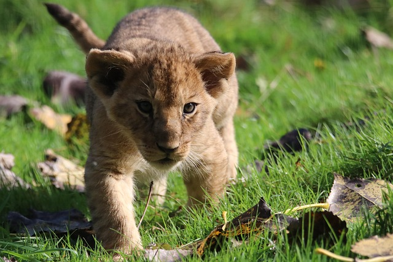
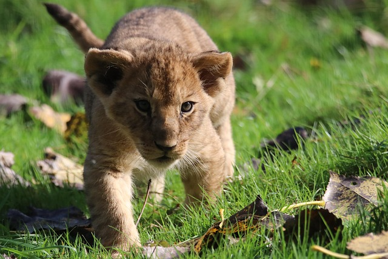

The Majestic Lions: Kings of the Wild
Lions, often referred to as the "King of the Jungle," are among the most iconic and majestic creatures on the planet. Found primarily in the grasslands and savannas of Africa, these powerful big cats are symbols of strength, courage, and unity. Their regal manes, fierce hunting skills, and strong social bonds make them one of nature’s most fascinating predators. Historically, lions once roamed across vast parts of Europe, Asia, and Africa, but today, they are mostly confined to sub-Saharan Africa, with a small, critically endangered population of Asiatic lions surviving in India’s Gir Forest.
A Social Big Cat Unlike other big cats, lions are highly social animals, living in groups known as prides. A pride typically consists of several lionesses, their cubs, and a few dominant males. The lionesses are the primary hunters, working together to take down prey such as zebras, wildebeests, and antelopes. Meanwhile, the males defend the pride’s territory from rival lions and other threats. This social structure is unique among big cats and allows for cooperative behaviors that increase survival rates.
Powerful Hunters Lions are apex predators, meaning they are at the top of the food chain. With their muscular build, sharp claws, and powerful jaws, they can take down prey much larger than themselves. Their cooperative hunting strategy increases their chances of success, making them one of the most efficient hunters in the animal kingdom. They often rely on stealth and teamwork, using intelligent tactics to isolate and overpower their prey. While they primarily hunt large herbivores, lions are also known to scavenge food from other predators, such as hyenas and leopards, asserting their dominance in the wild.

 
